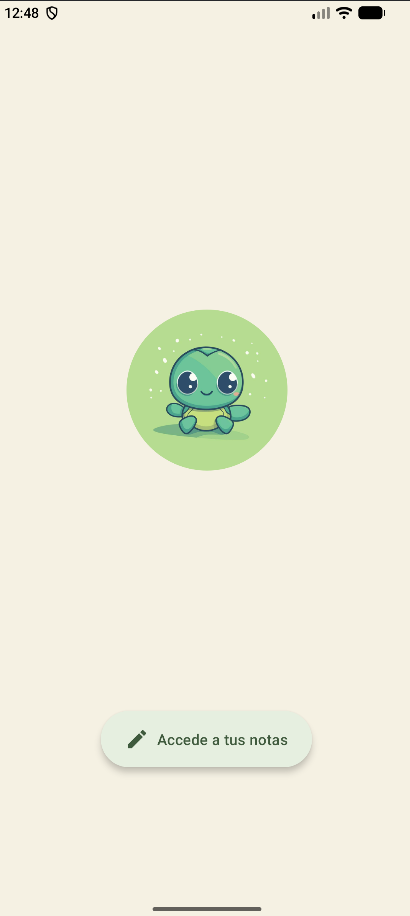
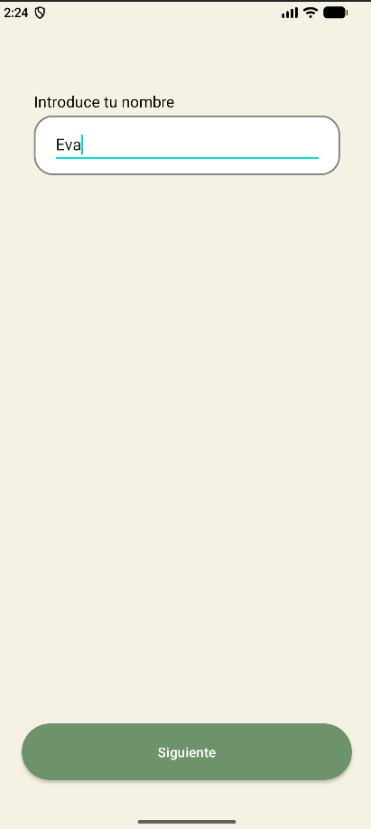
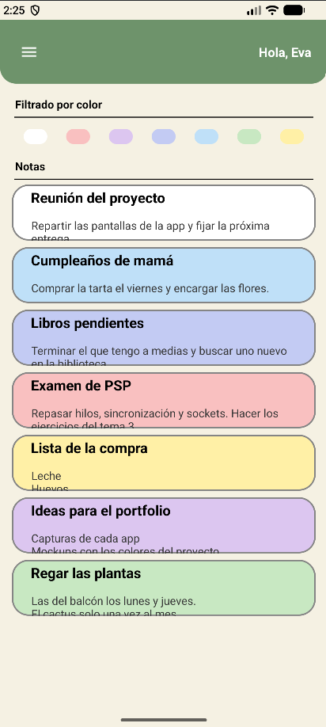
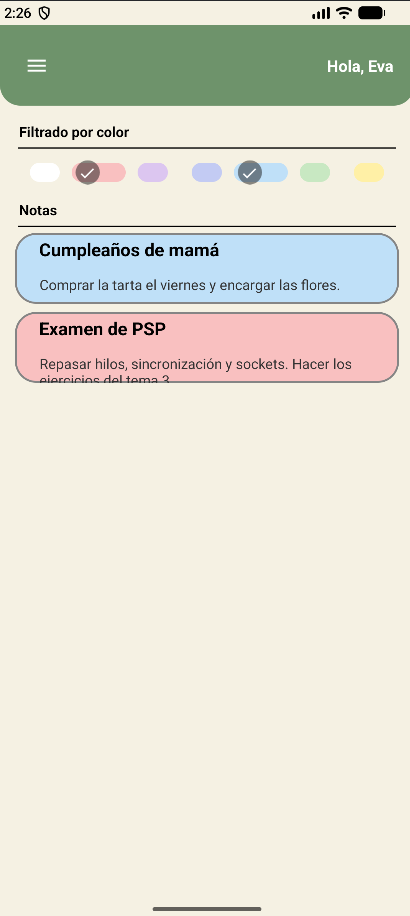
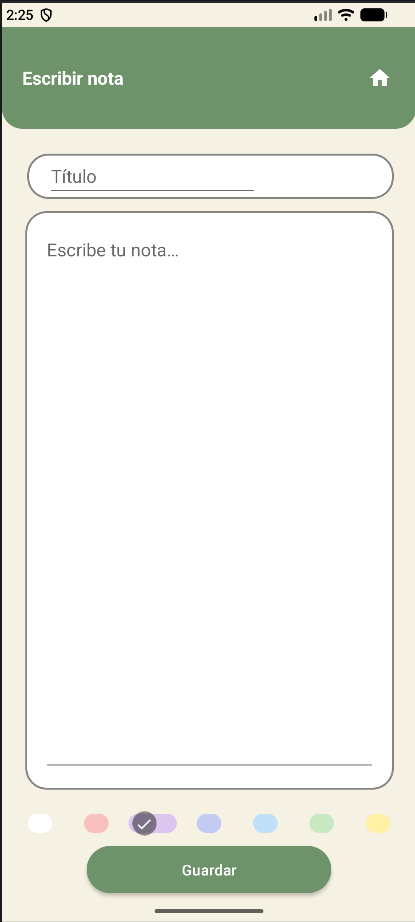
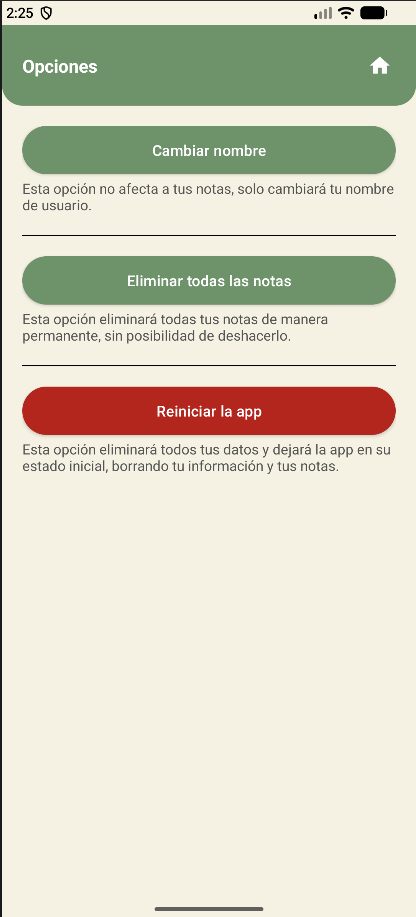
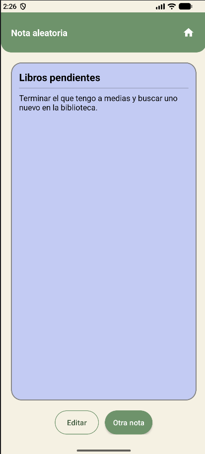
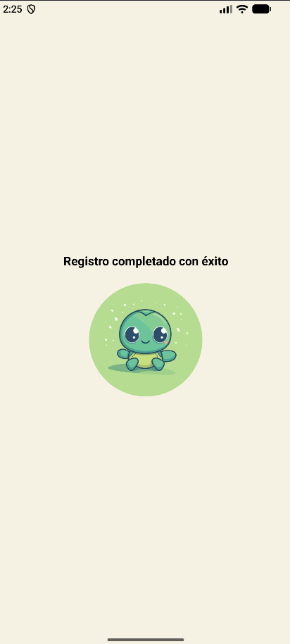

App Notas
App Android de notas de colores pastel, con menú lateral, opciones y una tortuga como mascota
Sobre el proyecto
App Notas es una aplicación Android nativa para tomar notas rápidas y organizarlas por colores. La primera vez que se abre, una bienvenida por pasos pide el nombre, una contraseña y el año de nacimiento; a partir de ahí la app te saluda por tu nombre y te lleva directamente a tus notas. Desde el menú lateral se llega a las opciones y a una nota elegida al azar.
Todo se guarda en el almacenamiento interno del móvil, sin internet ni base de datos: cada nota es un pequeño fichero de texto.
La desarrollé en las asignaturas de Desarrollo de Interfaces y Programación Multimedia y Dispositivos Móviles de DAM para practicar Activities, Fragments, adaptadores propios, componentes de Material Design y guardado en ficheros. La primera versión es de noviembre de 2025; en noviembre de 2026 terminé lo que faltaba de mi diseño de Figma: el menú lateral, las opciones, la nota aleatoria, los botones de Material 3, los colores pastel y la tortuga.
Documentación técnica en LaTeX
El proyecto incluye una documentación en LaTeX con el diagrama de clases, el diseño de cada pantalla, los requisitos y el código de cada clase explicado función por función.
- Descripción general
- Diagrama de clases
- Diseño de las pantallas
- 15 requisitos funcionales
- 10 requisitos no funcionales
- Código comentado (15 clases)
Características principales
Bienvenida por pasos
Tres Fragments (nombre, contraseña y año de nacimiento) que comparten los datos y validan que no quede nada vacío.
Crear y editar notas
Título, descripción de varias líneas y color. Al pulsar una nota se abre para editarla.
7 colores y filtro
Cada nota tiene su color pastel y la lista se filtra marcando uno o varios Chips a la vez.
Persistencia en ficheros
Las notas y los datos del usuario se guardan en la carpeta privada de la app y sobreviven al cerrarla.
Datos ocultos
El nombre, la contraseña y la fecha se guardan con un desplazamiento de caracteres para que no se lean a simple vista.
Menú lateral
Un NavigationView con la tortuga, el saludo y accesos a Escribir nota, Opciones y Nota aleatoria.
Opciones
Cambiar el nombre, eliminar todas las notas o reiniciar la app. Lo que no se puede deshacer pide confirmación.
Nota aleatoria
Enseña una de tus notas al azar, con su color, y deja ver otra o editarla.
Stack Tecnológico
Lenguaje & UI
- Java 11
- XML Layouts
- Activities y Fragments
- Chips de Material
Datos
- FileWriter / BufferedReader
- SharedPreferences
- ListView con ArrayAdapter propio
- Organización tipo MVVM
Herramientas
- Android Studio
- Gradle (Kotlin DSL)
- GitHub y Releases (APK)
- Figma
- LaTeX
- Javadoc
- Material Design
Galería







